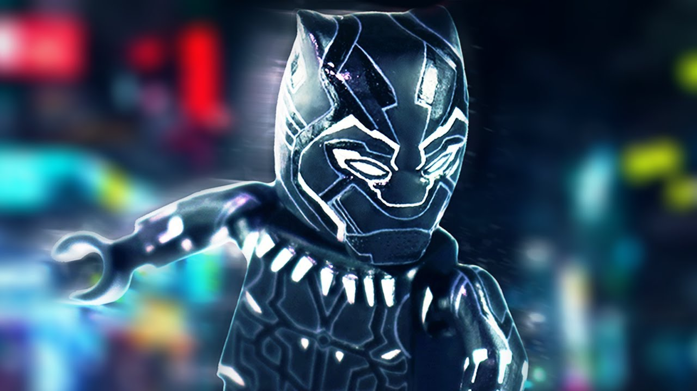

Чёрная пантера
Чёрная пантера (англ. Black Panther) — супергерой, появляющийся в комиксах издательства Marvel Comics. Был придуман Стэном Ли и Джеком Кёрби и впервые появился в июле 1966 года в комиксе Fantastic Four #52, почти сразу стал членом команды Мстителей. Чёрная пантера — первый чернокожий супергерой студии и один из первых в американских комиксах, он появился раньше Сокола, Люка Кейджа, Грозы и Блэйда. Сразу несколько персонажей в разное время появлялись в комиксах под этим псевдонимом. Все Чёрные пантеры связаны с вымышленным африканским государством Ваканда: сначала мантию Пантеры носил король этой страны Т’Чака, затем она перешла его сыну, Т’Чалле, который является наиболее известной Чёрной пантерой; в феврале 2009 года стартовал четвёртый том комиксов о Чёрной пантере, главным героем которой является сестра Т’Чаллы по имени Шури.

Т’Чалла — потомок древней королевской династии, которая много лет правит страной Вакандой, затерянной в африканских джунглях. Его отец, Т'Чака, был одним из самых выдающихся королей в истории Ваканды и первой Чёрной пантерой. Он смог обеспечить технологический прорыв своей стране, сделать её одной из самых развитых не только в регионе, но и во всём мире. Т’Чака первым начал разработку ценного вибраниума, вымышленного металла внеземного происхождения. Этот вибраниум и погубил Т’Чаку: пришли наёмники во главе с Улиссом Кло и попытались устроить государственный переворот. Т’Чака был убит, и лишь вмешательство ещё совсем молодого Т’Чаллы помогло остановить захватчиков и спасти Ваканду. Так мальчик стал королём.
Многие решили, что теперь Ваканда станет лёгкой добычей, и Т’Чалле пришлось защищать свою страну от постоянных нападений. Молодой король мог полагаться только на себя — и в итоге он стал блестящим бойцом, унаследовав от отца мантию Чёрной пантеры. Применяя и свой талант к науке, он раз за разом отбивал нападения. Но Т’Чалла понял: постоянно обороняясь, Ваканда обречена в итоге рухнуть под напором завоевателей. Он отправился в Америку, где заручился поддержкой Мстителей и даже вошёл в эту команду. Вернувшись в Ваканду, Т’Чалла вывел страну из изоляции, сделав её важной частью мировой политики. Позже он женился на Ороро Монро, более известной как Шторм, член команды Люди Икс. Некоторое время Чёрная пантера и Гроза были членами Фантастической Четвёрки, подменив Рида и Сьюзан Ричардс. В результате нападения сил Доктора Дума Т’Чалла впал в кому, и мантию Чёрной пантеры переняла его младшая сестра Шури. В пятом томе он вернётся. Чуть позже Т’Чалла стал новым Человеком без страха по просьбе Сорвиголовы. В итоге он до сих пор защищает «Адскую Кухню» от мафий и прочих суперзлодеев.